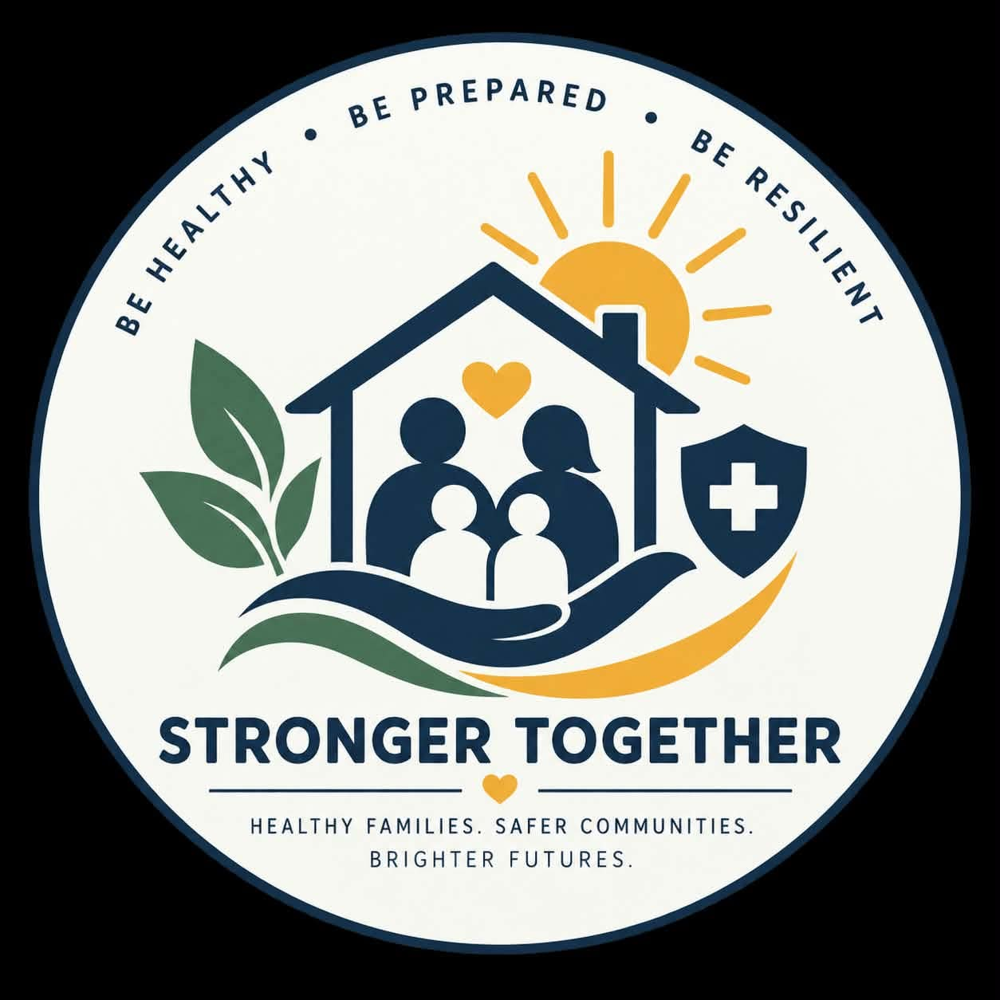
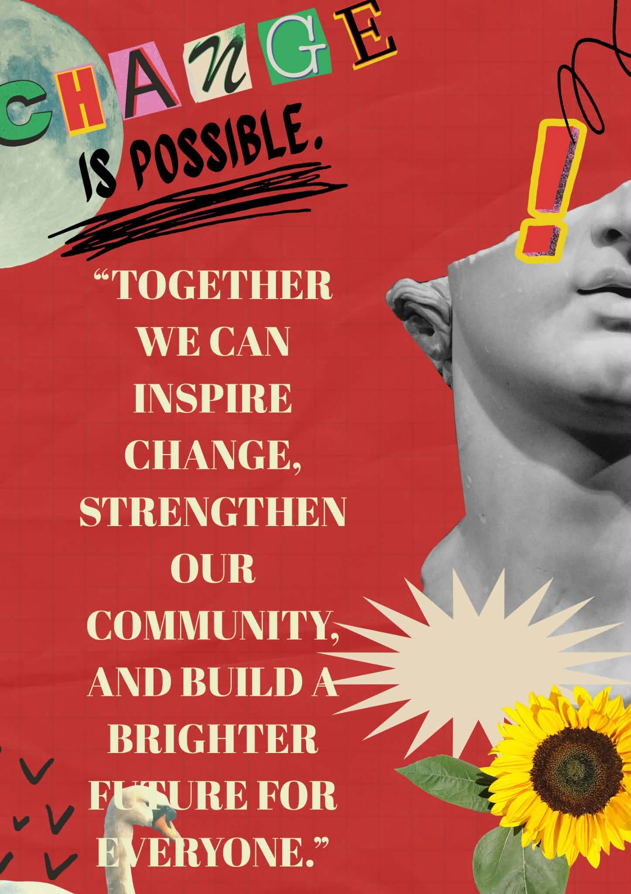

We, the members of group 3 will show you all
our campain in this website.


My Community Pledge: Reflection, Prayer, and Commitment
As a member of this community and a responsible digital citizen, I reflect deeply on what it means to live with integrity, respect, and purpose—both in daily life and online. I realize every action I take, word I speak, and post I share affects those around me. True citizenship is not just about belonging; it is about building trust, kindness, and safety. I recognize the digital world is also our shared space: content spreads fast and lasts long, so I must be extra careful, honest, and caring. I accept my duty to oppose harm, lies, and disrespect, choosing what is right even when no one sees me.
I offer this prayer to guide my heart: Heavenly Father, thank You for placing me in this community and for the gift of connection. Grant me wisdom to tell right from wrong, and a gentle spirit that lifts others up rather than putting them down. Help me be a light wherever I go—in person or online—to bring peace and goodness. Give me strength to take full responsibility for my words and actions, and to treat everyone with dignity.
With this, I make my sincere promise: I will be a good digital citizen. I will respect privacy, check facts before sharing, and never join in bullying, hate, or spreading falsehoods. I will use technology to learn, help, and connect—not to hurt or deceive. In my community, I will follow rules, help those in need, and care for everyone’s well-being. This pledge is honest and open, meant to be seen by others as an example. I will keep it every day, growing in character and making our shared home safer and kinder for all.